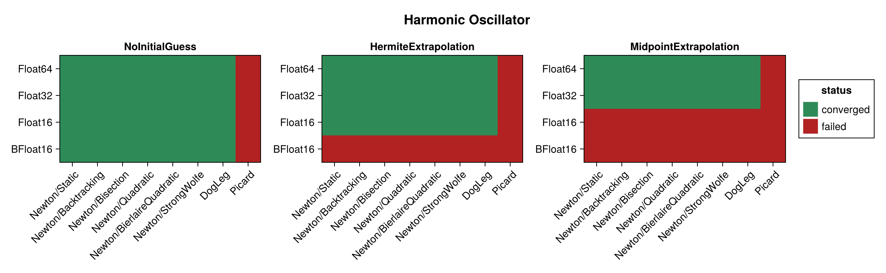
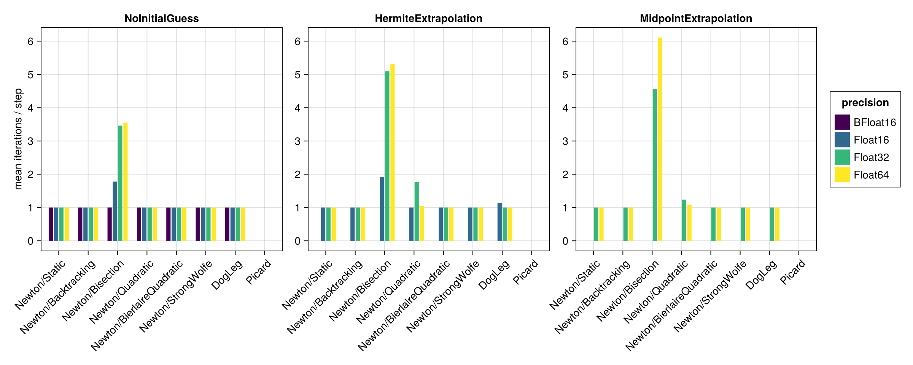
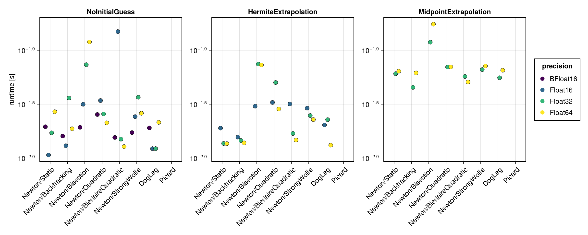
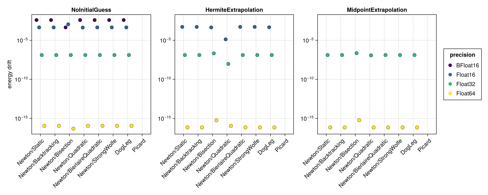
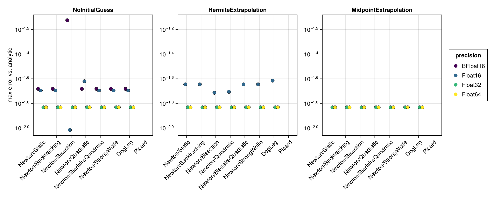
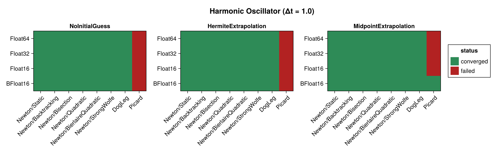
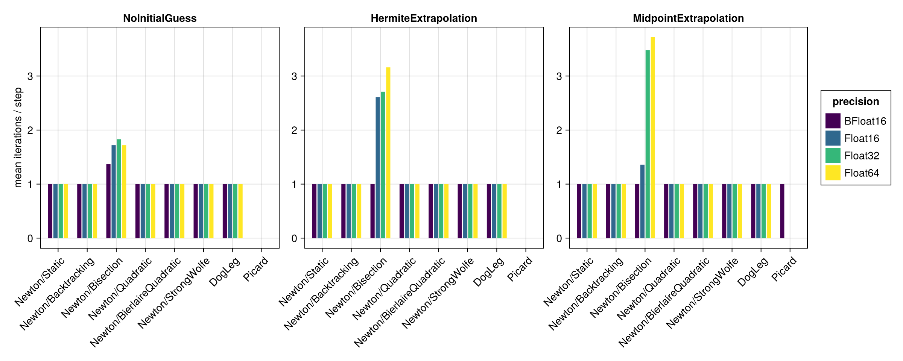
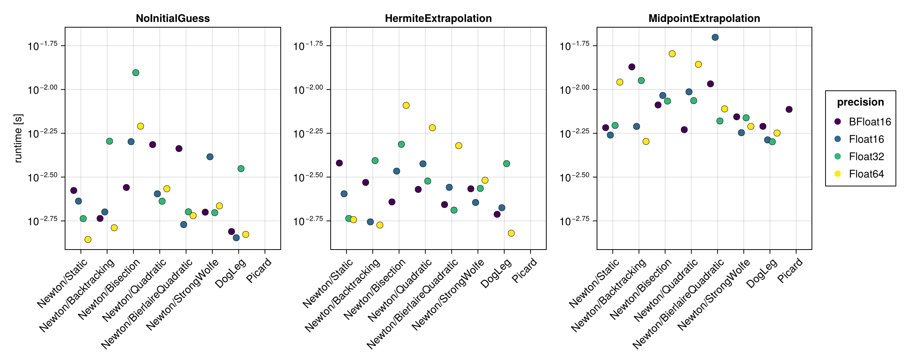
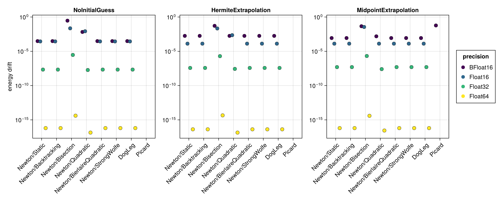
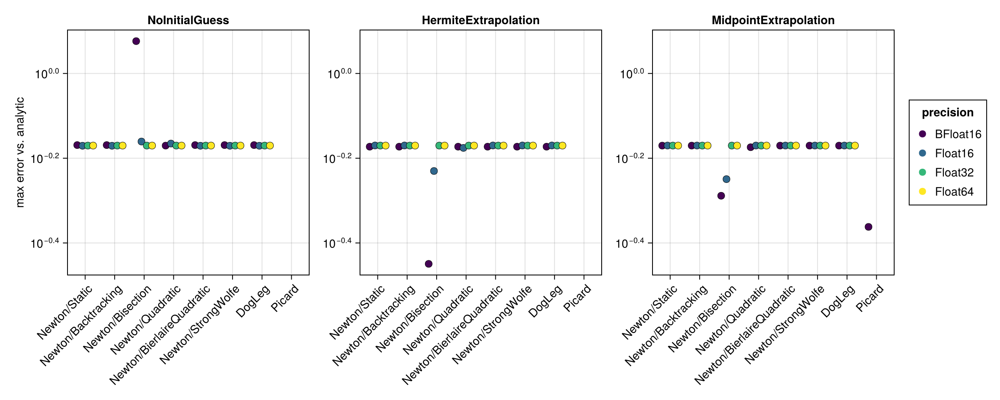

Harmonic Oscillator
The harmonic oscillator is a linear problem ($\ddot{x} = -k\,x$). Newton's method therefore solves the implicit midpoint equations exactly in a single iteration, which makes this example a useful baseline: differences between the solver configurations are dominated by convergence behaviour and floating point precision rather than by nonlinearity.
The benchmark below is regenerated at documentation build time with a single, fast timing pass. See the driver script scripts/midpoint_harmonic_oscillator.jl for accurate BenchmarkTools measurements. The results are shown first for the standard step $\Delta t = 0.1$ and then repeated for a coarse step $\Delta t = 1.0$ (see Coarse time step (Δt = 1.0)).
using SolverBenchmark
spec = harmonic_oscillator_spec(timespan = (0.0, 100.0), timestep = 0.1)
df = cached_sweep("harmonic_oscillator_dt0.1") do
run_benchmark(spec; timing = :quick, verbose = false, quiet = true)
endConvergence
Which combinations reached the solver tolerance at every time step:
plot_convergence(df; title = "Harmonic Oscillator")
Nonlinear iterations
Mean number of nonlinear-solver iterations per time step (converged runs only):
plot_iterations(df)
Run time
plot_runtime(df)
Energy drift
Drift of the conserved energy $|H(t_\text{end}) - H(0)|$ — a proxy for the achievable accuracy at each precision:
plot_energy_drift(df)
Accuracy
Maximum error against the analytic solution:
plot_accuracy(df)
Discussion
- Because the problem is linear, the implicit midpoint equations are linear too, so Newton converges in exactly one iteration per step for every line search, as does
DogLeg. The choice of line search is therefore essentially irrelevant to the iteration count here. - Every configuration converges at
Float16and above: 72 of the 96 runs — eight solver configurations × three initial guesses at each ofFloat16,Float32andFloat64. That includes theQuadraticandBierlaireQuadraticline searches, which need SimpleSolvers 0.10 or later to converge here. BFloat16converges only withNoInitialGuess(8/24), and the reason has nothing to do with the solver. With 8 significand bits the spacing ofBFloat16at $t = 100$ is0.5, five times the step, so the time series0:0.1:100holds 1001 points but only 451 distinct values; the two extrapolating initial guesses are then handed two identical times and abort. At the coarse step the grid resolves and all 24BFloat16runs converge — the one place in this study where a larger time step helps.Bisectionstops at the requested tolerance; the others overshoot it. Its residual sits right atf_abstol = 8 eps(T), whereas the remaining line searches drive it a further two to three orders of magnitude down. All of them converge — the difference is how far past the tolerance they go, not whether they reach it. The results table flags this in theat_tolerancecolumn.Picard(a fixed-point iteration) converges but needs many more iterations and is by far the slowest solver. Its iteration count is set by how far the tolerance is from the guess, so it rises with precision here: ≈ 1 per step atFloat16, 2–3 atFloat32, 7–9 atFloat64.- Precision sets the achievable accuracy: the energy is conserved to roughly machine precision (≈
7e-17atFloat64,1e-7atFloat32,4e-4at both 16-bit formats), whereas the error against the analytic solution is set by the $\mathcal{O}(\Delta t^2)$ midpoint discretization. That discretization error (1.47e-2) is reached exactly byFloat32andFloat64;Float16(2.0e-2…2.6e-2) andBFloat16(3.0e-2…7.5e-2) sit above it, round-off rather than discretization limited — and the gap between the two 16-bit formats is the three significand bits between them. - The initial guess does not affect Newton (one exact step regardless), but it does affect
Picard:MidpointExtrapolationgives the fewest iterations andNoInitialGuess(previous step) the most.
Results table
markdown_table(summary_table(df))| precision | solver_label | initial_guess | converged | iterations_mean | runtime_s | max_residual | at_tolerance | energy_drift | accuracy |
|---|---|---|---|---|---|---|---|---|---|
| BFloat16 | Newton/Static | NoInitialGuess | ✓ | 1 | 0.0196 | 0.00218 | ✗ | 0.00388 | 0.0208 |
| BFloat16 | Newton/Static | HermiteExtrapolation | ✗ | — | — | — | ✗ | — | — |
| BFloat16 | Newton/Static | MidpointExtrapolation | ✗ | — | — | — | ✗ | — | — |
| BFloat16 | Newton/Backtracking | NoInitialGuess | ✓ | 1 | 0.016 | 0.00218 | ✗ | 0.00388 | 0.0208 |
| BFloat16 | Newton/Backtracking | HermiteExtrapolation | ✗ | — | — | — | ✗ | — | — |
| BFloat16 | Newton/Backtracking | MidpointExtrapolation | ✗ | — | — | — | ✗ | — | — |
| BFloat16 | Newton/Bisection | NoInitialGuess | ✓ | 1 | 0.0193 | 0.0625 | ✓ | 0.000443 | 0.075 |
| BFloat16 | Newton/Bisection | HermiteExtrapolation | ✗ | — | — | — | ✗ | — | — |
| BFloat16 | Newton/Bisection | MidpointExtrapolation | ✗ | — | — | — | ✗ | — | — |
| BFloat16 | Newton/Quadratic | NoInitialGuess | ✓ | 1 | 0.0254 | 0.00218 | ✗ | 0.00388 | 0.0208 |
| BFloat16 | Newton/Quadratic | HermiteExtrapolation | ✗ | — | — | — | ✗ | — | — |
| BFloat16 | Newton/Quadratic | MidpointExtrapolation | ✗ | — | — | — | ✗ | — | — |
| BFloat16 | Newton/BierlaireQuadratic | NoInitialGuess | ✓ | 1 | 0.0155 | 0.00218 | ✗ | 0.00388 | 0.0208 |
| BFloat16 | Newton/BierlaireQuadratic | HermiteExtrapolation | ✗ | — | — | — | ✗ | — | — |
| BFloat16 | Newton/BierlaireQuadratic | MidpointExtrapolation | ✗ | — | — | — | ✗ | — | — |
| BFloat16 | Newton/StrongWolfe | NoInitialGuess | ✓ | 1 | 0.0172 | 0.00218 | ✗ | 0.00388 | 0.0208 |
| BFloat16 | Newton/StrongWolfe | HermiteExtrapolation | ✗ | — | — | — | ✗ | — | — |
| BFloat16 | Newton/StrongWolfe | MidpointExtrapolation | ✗ | — | — | — | ✗ | — | — |
| BFloat16 | DogLeg | NoInitialGuess | ✓ | 1 | 0.0191 | 0.00218 | ✗ | 0.00388 | 0.0208 |
| BFloat16 | DogLeg | HermiteExtrapolation | ✗ | — | — | — | ✗ | — | — |
| BFloat16 | DogLeg | MidpointExtrapolation | ✗ | — | — | — | ✗ | — | — |
| BFloat16 | Picard | NoInitialGuess | ✗ | 1.05 | 0.0187 | 0.367 | ✗ | — | — |
| BFloat16 | Picard | HermiteExtrapolation | ✗ | — | — | — | ✗ | — | — |
| BFloat16 | Picard | MidpointExtrapolation | ✗ | — | — | — | ✗ | — | — |
| Float16 | Newton/Static | NoInitialGuess | ✓ | 1 | 0.0107 | 0.000244 | ✗ | 0.000443 | 0.0202 |
| Float16 | Newton/Static | HermiteExtrapolation | ✓ | 1 | 0.019 | 0.00173 | ✓ | 0.000514 | 0.0226 |
| Float16 | Newton/Static | MidpointExtrapolation | ✗ | — | — | — | ✗ | — | — |
| Float16 | Newton/Backtracking | NoInitialGuess | ✓ | 1 | 0.013 | 0.000244 | ✗ | 0.000443 | 0.0202 |
| Float16 | Newton/Backtracking | HermiteExtrapolation | ✓ | 1 | 0.0156 | 0.00173 | ✓ | 0.000514 | 0.0226 |
| Float16 | Newton/Backtracking | MidpointExtrapolation | ✗ | — | — | — | ✗ | — | — |
| Float16 | Newton/Bisection | NoInitialGuess | ✓ | 1.78 | 0.0316 | 0.00781 | ✓ | 0.0011 | 0.00964 |
| Float16 | Newton/Bisection | HermiteExtrapolation | ✓ | 1.91 | 0.0303 | 0.00781 | ✓ | 0.000439 | 0.0193 |
| Float16 | Newton/Bisection | MidpointExtrapolation | ✗ | — | — | — | ✗ | — | — |
| Float16 | Newton/Quadratic | NoInitialGuess | ✓ | 1 | 0.0342 | 0.00134 | ✓ | 0.000424 | 0.024 |
| Float16 | Newton/Quadratic | HermiteExtrapolation | ✓ | 1 | 0.0328 | 0.00317 | ✓ | 1.32e-05 | 0.0197 |
| Float16 | Newton/Quadratic | MidpointExtrapolation | ✗ | — | — | — | ✗ | — | — |
| Float16 | Newton/BierlaireQuadratic | NoInitialGuess | ✓ | 1 | 0.149 | 0.000244 | ✗ | 0.000443 | 0.0202 |
| Float16 | Newton/BierlaireQuadratic | HermiteExtrapolation | ✓ | 1 | 0.0318 | 0.00169 | ✓ | 0.000514 | 0.0226 |
| Float16 | Newton/BierlaireQuadratic | MidpointExtrapolation | ✗ | — | — | — | ✗ | — | — |
| Float16 | Newton/StrongWolfe | NoInitialGuess | ✓ | 1 | 0.0243 | 0.000244 | ✗ | 0.000443 | 0.0202 |
| Float16 | Newton/StrongWolfe | HermiteExtrapolation | ✓ | 1 | 0.029 | 0.00173 | ✓ | 0.000514 | 0.0226 |
| Float16 | Newton/StrongWolfe | MidpointExtrapolation | ✗ | — | — | — | ✗ | — | — |
| Float16 | DogLeg | NoInitialGuess | ✓ | 1 | 0.0122 | 0.000244 | ✗ | 0.000443 | 0.0202 |
| Float16 | DogLeg | HermiteExtrapolation | ✓ | 1.14 | 0.0203 | 0.00109 | ✓ | 0.000462 | 0.0242 |
| Float16 | DogLeg | MidpointExtrapolation | ✗ | — | — | — | ✗ | — | — |
| Float16 | Picard | NoInitialGuess | ✗ | 2.05 | 0.0252 | 0.262 | ✗ | — | — |
| Float16 | Picard | HermiteExtrapolation | ✗ | 1.98 | 0.0201 | 28.2 | ✗ | — | — |
| Float16 | Picard | MidpointExtrapolation | ✗ | — | — | — | ✗ | — | — |
| Float32 | Newton/Static | NoInitialGuess | ✓ | 1 | 0.0172 | 3.33e-08 | ✗ | 1.28e-07 | 0.0147 |
| Float32 | Newton/Static | HermiteExtrapolation | ✓ | 1 | 0.0137 | 3.33e-08 | ✗ | 1.28e-07 | 0.0147 |
| Float32 | Newton/Static | MidpointExtrapolation | ✓ | 1 | 0.0607 | 3.33e-08 | ✗ | 1.28e-07 | 0.0147 |
| Float32 | Newton/Backtracking | NoInitialGuess | ✓ | 1 | 0.036 | 3.33e-08 | ✗ | 1.28e-07 | 0.0147 |
| Float32 | Newton/Backtracking | HermiteExtrapolation | ✓ | 1 | 0.0146 | 3.33e-08 | ✗ | 1.28e-07 | 0.0147 |
| Float32 | Newton/Backtracking | MidpointExtrapolation | ✓ | 1 | 0.0453 | 3.33e-08 | ✗ | 1.28e-07 | 0.0147 |
| Float32 | Newton/Bisection | NoInitialGuess | ✓ | 3.46 | 0.0735 | 7.65e-07 | ✓ | 1.27e-07 | 0.0147 |
| Float32 | Newton/Bisection | HermiteExtrapolation | ✓ | 5.1 | 0.0744 | 9.45e-07 | ✓ | 2.1e-07 | 0.0147 |
| Float32 | Newton/Bisection | MidpointExtrapolation | ✓ | 4.56 | 0.119 | 8.75e-07 | ✓ | 2.22e-07 | 0.0147 |
| Float32 | Newton/Quadratic | NoInitialGuess | ✓ | 1 | 0.0257 | 3.33e-08 | ✗ | 1.28e-07 | 0.0147 |
| Float32 | Newton/Quadratic | HermiteExtrapolation | ✓ | 1.77 | 0.0502 | 1.23e-07 | ✓ | 9.29e-09 | 0.0147 |
| Float32 | Newton/Quadratic | MidpointExtrapolation | ✓ | 1.24 | 0.0698 | 3.33e-08 | ✗ | 1.18e-07 | 0.0147 |
| Float32 | Newton/BierlaireQuadratic | NoInitialGuess | ✓ | 1 | 0.015 | 3.33e-08 | ✗ | 1.28e-07 | 0.0147 |
| Float32 | Newton/BierlaireQuadratic | HermiteExtrapolation | ✓ | 1 | 0.0169 | 3.33e-08 | ✗ | 1.28e-07 | 0.0147 |
| Float32 | Newton/BierlaireQuadratic | MidpointExtrapolation | ✓ | 1 | 0.0572 | 3.33e-08 | ✗ | 1.28e-07 | 0.0147 |
| Float32 | Newton/StrongWolfe | NoInitialGuess | ✓ | 1 | 0.0366 | 3.33e-08 | ✗ | 1.28e-07 | 0.0147 |
| Float32 | Newton/StrongWolfe | HermiteExtrapolation | ✓ | 1 | 0.0248 | 3.33e-08 | ✗ | 1.28e-07 | 0.0147 |
| Float32 | Newton/StrongWolfe | MidpointExtrapolation | ✓ | 1 | 0.0662 | 3.33e-08 | ✗ | 1.28e-07 | 0.0147 |
| Float32 | DogLeg | NoInitialGuess | ✓ | 1 | 0.0122 | 3.33e-08 | ✗ | 1.28e-07 | 0.0147 |
| Float32 | DogLeg | HermiteExtrapolation | ✓ | 1 | 0.0227 | 3.33e-08 | ✗ | 1.28e-07 | 0.0147 |
| Float32 | DogLeg | MidpointExtrapolation | ✓ | 1 | 0.0556 | 3.33e-08 | ✗ | 1.28e-07 | 0.0147 |
| Float32 | Picard | NoInitialGuess | ✗ | 2.05 | 0.0318 | 0.25 | ✗ | — | — |
| Float32 | Picard | HermiteExtrapolation | ✗ | 2 | 0.0296 | 0.00095 | ✗ | — | — |
| Float32 | Picard | MidpointExtrapolation | ✗ | 2 | 0.0786 | 0.000221 | ✗ | — | — |
| Float64 | Newton/Static | NoInitialGuess | ✓ | 1 | 0.0269 | 6.21e-17 | ✗ | 1.11e-16 | 0.0147 |
| Float64 | Newton/Static | HermiteExtrapolation | ✓ | 1 | 0.0136 | 6.21e-17 | ✗ | 6.94e-17 | 0.0147 |
| Float64 | Newton/Static | MidpointExtrapolation | ✓ | 1 | 0.0639 | 6.21e-17 | ✗ | 6.94e-17 | 0.0147 |
| Float64 | Newton/Backtracking | NoInitialGuess | ✓ | 1 | 0.0187 | 6.21e-17 | ✗ | 1.11e-16 | 0.0147 |
| Float64 | Newton/Backtracking | HermiteExtrapolation | ✓ | 1 | 0.0139 | 6.21e-17 | ✗ | 6.94e-17 | 0.0147 |
| Float64 | Newton/Backtracking | MidpointExtrapolation | ✓ | 1 | 0.0617 | 6.21e-17 | ✗ | 6.94e-17 | 0.0147 |
| Float64 | Newton/Bisection | NoInitialGuess | ✓ | 3.55 | 0.119 | 1.78e-15 | ✓ | 4.86e-17 | 0.0147 |
| Float64 | Newton/Bisection | HermiteExtrapolation | ✓ | 5.31 | 0.073 | 1.63e-15 | ✓ | 5.62e-16 | 0.0147 |
| Float64 | Newton/Bisection | MidpointExtrapolation | ✓ | 6.11 | 0.175 | 1.64e-15 | ✓ | 5.83e-16 | 0.0147 |
| Float64 | Newton/Quadratic | NoInitialGuess | ✓ | 1 | 0.0213 | 6.21e-17 | ✗ | 1.11e-16 | 0.0147 |
| Float64 | Newton/Quadratic | HermiteExtrapolation | ✓ | 1.04 | 0.0285 | 1e-16 | ✗ | 1.11e-16 | 0.0147 |
| Float64 | Newton/Quadratic | MidpointExtrapolation | ✓ | 1.09 | 0.0701 | 4.17e-16 | ✓ | 6.94e-17 | 0.0147 |
| Float64 | Newton/BierlaireQuadratic | NoInitialGuess | ✓ | 1 | 0.0128 | 6.21e-17 | ✗ | 1.11e-16 | 0.0147 |
| Float64 | Newton/BierlaireQuadratic | HermiteExtrapolation | ✓ | 1 | 0.0147 | 6.21e-17 | ✗ | 6.94e-17 | 0.0147 |
| Float64 | Newton/BierlaireQuadratic | MidpointExtrapolation | ✓ | 1 | 0.0508 | 6.21e-17 | ✗ | 6.94e-17 | 0.0147 |
| Float64 | Newton/StrongWolfe | NoInitialGuess | ✓ | 1 | 0.026 | 6.21e-17 | ✗ | 1.11e-16 | 0.0147 |
| Float64 | Newton/StrongWolfe | HermiteExtrapolation | ✓ | 1 | 0.0228 | 6.21e-17 | ✗ | 6.94e-17 | 0.0147 |
| Float64 | Newton/StrongWolfe | MidpointExtrapolation | ✓ | 1 | 0.0715 | 6.21e-17 | ✗ | 6.94e-17 | 0.0147 |
| Float64 | DogLeg | NoInitialGuess | ✓ | 1 | 0.0214 | 6.21e-17 | ✗ | 1.11e-16 | 0.0147 |
| Float64 | DogLeg | HermiteExtrapolation | ✓ | 1 | 0.0132 | 6.21e-17 | ✗ | 6.94e-17 | 0.0147 |
| Float64 | DogLeg | MidpointExtrapolation | ✓ | 1 | 0.0652 | 6.21e-17 | ✗ | 6.94e-17 | 0.0147 |
| Float64 | Picard | NoInitialGuess | ✗ | 2.05 | 0.128 | 0.25 | ✗ | — | — |
| Float64 | Picard | HermiteExtrapolation | ✗ | 2 | 0.0558 | 0.000857 | ✗ | — | — |
| Float64 | Picard | MidpointExtrapolation | ✗ | 2 | 0.112 | 0.000221 | ✗ | — | — |
Coarse time step (Δt = 1.0)
The same benchmark with a ten times larger step. For the linear oscillator the implicit equations stay linear, so Newton still converges in one iteration; the main effect is on Picard (many more iterations) and on the energy drift.
spec1 = harmonic_oscillator_spec(timespan = (0.0, 100.0), timestep = 1.0)
df1 = cached_sweep("harmonic_oscillator_dt1.0") do
run_benchmark(spec1; timing = :quick, verbose = false, quiet = true)
endConvergence
plot_convergence(df1; title = "Harmonic Oscillator (Δt = 1.0)")
Nonlinear iterations
plot_iterations(df1)
Run time
plot_runtime(df1)
Energy drift
plot_energy_drift(df1)
Accuracy
plot_accuracy(df1)
Results table
markdown_table(summary_table(df1))| precision | solver_label | initial_guess | converged | iterations_mean | runtime_s | max_residual | at_tolerance | energy_drift | accuracy |
|---|---|---|---|---|---|---|---|---|---|
| BFloat16 | Newton/Static | NoInitialGuess | ✓ | 1 | 0.00265 | 0.00218 | ✗ | 0.000305 | 0.678 |
| BFloat16 | Newton/Static | HermiteExtrapolation | ✓ | 1 | 0.0038 | 0.00218 | ✗ | 0.00177 | 0.672 |
| BFloat16 | Newton/Static | MidpointExtrapolation | ✓ | 1 | 0.00606 | 0.00218 | ✗ | 0.000854 | 0.676 |
| BFloat16 | Newton/Backtracking | NoInitialGuess | ✓ | 1 | 0.00184 | 0.00218 | ✗ | 0.000305 | 0.678 |
| BFloat16 | Newton/Backtracking | HermiteExtrapolation | ✓ | 1 | 0.00295 | 0.00218 | ✗ | 0.00177 | 0.672 |
| BFloat16 | Newton/Backtracking | MidpointExtrapolation | ✓ | 1 | 0.0135 | 0.00218 | ✗ | 0.000854 | 0.676 |
| BFloat16 | Newton/Bisection | NoInitialGuess | ✓ | 1.37 | 0.00276 | 0.0625 | ✓ | 0.292 | 1.19 |
| BFloat16 | Newton/Bisection | HermiteExtrapolation | ✓ | 1 | 0.00228 | 0.0554 | ✓ | 0.0517 | 0.355 |
| BFloat16 | Newton/Bisection | MidpointExtrapolation | ✓ | 1 | 0.00816 | 0.0226 | ✓ | 0.0452 | 0.515 |
| BFloat16 | Newton/Quadratic | NoInitialGuess | ✓ | 1 | 0.00485 | 0.00793 | ✓ | 0.00659 | 0.676 |
| BFloat16 | Newton/Quadratic | HermiteExtrapolation | ✓ | 1 | 0.00269 | 0.00218 | ✗ | 0.00177 | 0.672 |
| BFloat16 | Newton/Quadratic | MidpointExtrapolation | ✓ | 1 | 0.0059 | 0.00224 | ✗ | 0.00153 | 0.67 |
| BFloat16 | Newton/BierlaireQuadratic | NoInitialGuess | ✓ | 1 | 0.0046 | 0.00218 | ✗ | 0.000305 | 0.678 |
| BFloat16 | Newton/BierlaireQuadratic | HermiteExtrapolation | ✓ | 1 | 0.0022 | 0.00218 | ✗ | 0.00177 | 0.672 |
| BFloat16 | Newton/BierlaireQuadratic | MidpointExtrapolation | ✓ | 1 | 0.0108 | 0.00218 | ✗ | 0.000854 | 0.676 |
| BFloat16 | Newton/StrongWolfe | NoInitialGuess | ✓ | 1 | 0.00199 | 0.00218 | ✗ | 0.000305 | 0.678 |
| BFloat16 | Newton/StrongWolfe | HermiteExtrapolation | ✓ | 1 | 0.00271 | 0.00218 | ✗ | 0.00177 | 0.672 |
| BFloat16 | Newton/StrongWolfe | MidpointExtrapolation | ✓ | 1 | 0.00699 | 0.00218 | ✗ | 0.000854 | 0.676 |
| BFloat16 | DogLeg | NoInitialGuess | ✓ | 1 | 0.00155 | 0.00218 | ✗ | 0.000305 | 0.678 |
| BFloat16 | DogLeg | HermiteExtrapolation | ✓ | 1 | 0.00194 | 0.00218 | ✗ | 0.00177 | 0.672 |
| BFloat16 | DogLeg | MidpointExtrapolation | ✓ | 1 | 0.00616 | 0.00218 | ✗ | 0.000854 | 0.676 |
| BFloat16 | Picard | NoInitialGuess | ✗ | 2.48 | 0.00254 | 7.29e+05 | ✗ | — | — |
| BFloat16 | Picard | HermiteExtrapolation | ✗ | 2.03 | 0.00238 | Inf | ✗ | — | — |
| BFloat16 | Picard | MidpointExtrapolation | ✓ | 1 | 0.0077 | 0.0488 | ✓ | 0.0585 | 0.434 |
| Float16 | Newton/Static | NoInitialGuess | ✓ | 1 | 0.00231 | 0.000244 | ✗ | 0.000275 | 0.675 |
| Float16 | Newton/Static | HermiteExtrapolation | ✓ | 1 | 0.00254 | 0.000244 | ✗ | 0.00013 | 0.676 |
| Float16 | Newton/Static | MidpointExtrapolation | ✓ | 1 | 0.00549 | 0.000244 | ✗ | 0.00013 | 0.676 |
| Float16 | Newton/Backtracking | NoInitialGuess | ✓ | 1 | 0.002 | 0.000244 | ✗ | 0.000275 | 0.675 |
| Float16 | Newton/Backtracking | HermiteExtrapolation | ✓ | 1 | 0.00176 | 0.000244 | ✗ | 0.00013 | 0.676 |
| Float16 | Newton/Backtracking | MidpointExtrapolation | ✓ | 1 | 0.00615 | 0.000244 | ✗ | 0.00013 | 0.676 |
| Float16 | Newton/Bisection | NoInitialGuess | ✓ | 1.72 | 0.00504 | 0.00774 | ✓ | 0.0223 | 0.691 |
| Float16 | Newton/Bisection | HermiteExtrapolation | ✓ | 2.61 | 0.00342 | 0.00775 | ✓ | 0.0214 | 0.589 |
| Float16 | Newton/Bisection | MidpointExtrapolation | ✓ | 1.36 | 0.00925 | 0.00778 | ✓ | 0.0351 | 0.563 |
| Float16 | Newton/Quadratic | NoInitialGuess | ✓ | 1 | 0.00254 | 0.00273 | ✓ | 0.00835 | 0.683 |
| Float16 | Newton/Quadratic | HermiteExtrapolation | ✓ | 1 | 0.00377 | 0.00101 | ✓ | 0.00224 | 0.667 |
| Float16 | Newton/Quadratic | MidpointExtrapolation | ✓ | 1 | 0.0097 | 0.000244 | ✗ | 0.00013 | 0.676 |
| Float16 | Newton/BierlaireQuadratic | NoInitialGuess | ✓ | 1 | 0.00169 | 0.000244 | ✗ | 0.000275 | 0.675 |
| Float16 | Newton/BierlaireQuadratic | HermiteExtrapolation | ✓ | 1 | 0.00277 | 0.000244 | ✗ | 0.00013 | 0.676 |
| Float16 | Newton/BierlaireQuadratic | MidpointExtrapolation | ✓ | 1 | 0.0199 | 0.000244 | ✗ | 0.00013 | 0.676 |
| Float16 | Newton/StrongWolfe | NoInitialGuess | ✓ | 1 | 0.00413 | 0.000244 | ✗ | 0.000275 | 0.675 |
| Float16 | Newton/StrongWolfe | HermiteExtrapolation | ✓ | 1 | 0.00227 | 0.000244 | ✗ | 0.00013 | 0.676 |
| Float16 | Newton/StrongWolfe | MidpointExtrapolation | ✓ | 1 | 0.00567 | 0.000244 | ✗ | 0.00013 | 0.676 |
| Float16 | DogLeg | NoInitialGuess | ✓ | 1 | 0.00143 | 0.000244 | ✗ | 0.000275 | 0.675 |
| Float16 | DogLeg | HermiteExtrapolation | ✓ | 1 | 0.00211 | 0.000244 | ✗ | 0.00013 | 0.676 |
| Float16 | DogLeg | MidpointExtrapolation | ✓ | 1 | 0.00516 | 0.000244 | ✗ | 0.00013 | 0.676 |
| Float16 | Picard | NoInitialGuess | ✗ | — | — | — | ✗ | — | — |
| Float16 | Picard | HermiteExtrapolation | ✗ | — | — | — | ✗ | — | — |
| Float16 | Picard | MidpointExtrapolation | ✗ | 1.6 | 0.00587 | 0.023 | ✗ | — | — |
| Float32 | Newton/Static | NoInitialGuess | ✓ | 1 | 0.00183 | 3.33e-08 | ✗ | 2.14e-08 | 0.676 |
| Float32 | Newton/Static | HermiteExtrapolation | ✓ | 1 | 0.00184 | 3.07e-08 | ✗ | 3.73e-08 | 0.676 |
| Float32 | Newton/Static | MidpointExtrapolation | ✓ | 1 | 0.00623 | 3.33e-08 | ✗ | 4.94e-08 | 0.676 |
| Float32 | Newton/Backtracking | NoInitialGuess | ✓ | 1 | 0.00507 | 3.33e-08 | ✗ | 2.14e-08 | 0.676 |
| Float32 | Newton/Backtracking | HermiteExtrapolation | ✓ | 1 | 0.00393 | 3.07e-08 | ✗ | 3.73e-08 | 0.676 |
| Float32 | Newton/Backtracking | MidpointExtrapolation | ✓ | 1 | 0.0112 | 3.33e-08 | ✗ | 4.94e-08 | 0.676 |
| Float32 | Newton/Bisection | NoInitialGuess | ✓ | 1.83 | 0.0125 | 9.54e-07 | ✓ | 2.94e-06 | 0.676 |
| Float32 | Newton/Bisection | HermiteExtrapolation | ✓ | 2.71 | 0.00487 | 9.53e-07 | ✓ | 1.96e-06 | 0.676 |
| Float32 | Newton/Bisection | MidpointExtrapolation | ✓ | 3.48 | 0.00859 | 9.52e-07 | ✓ | 2.06e-06 | 0.676 |
| Float32 | Newton/Quadratic | NoInitialGuess | ✓ | 1 | 0.0023 | 3.33e-08 | ✗ | 1.86e-08 | 0.676 |
| Float32 | Newton/Quadratic | HermiteExtrapolation | ✓ | 1 | 0.003 | 3.18e-08 | ✗ | 2.7e-08 | 0.676 |
| Float32 | Newton/Quadratic | MidpointExtrapolation | ✓ | 1 | 0.00864 | 3.07e-08 | ✗ | 2.51e-08 | 0.676 |
| Float32 | Newton/BierlaireQuadratic | NoInitialGuess | ✓ | 1 | 0.002 | 3.33e-08 | ✗ | 2.14e-08 | 0.676 |
| Float32 | Newton/BierlaireQuadratic | HermiteExtrapolation | ✓ | 1 | 0.00205 | 3.07e-08 | ✗ | 3.73e-08 | 0.676 |
| Float32 | Newton/BierlaireQuadratic | MidpointExtrapolation | ✓ | 1 | 0.00661 | 3.33e-08 | ✗ | 4.94e-08 | 0.676 |
| Float32 | Newton/StrongWolfe | NoInitialGuess | ✓ | 1 | 0.00198 | 3.33e-08 | ✗ | 2.14e-08 | 0.676 |
| Float32 | Newton/StrongWolfe | HermiteExtrapolation | ✓ | 1 | 0.00273 | 3.07e-08 | ✗ | 3.73e-08 | 0.676 |
| Float32 | Newton/StrongWolfe | MidpointExtrapolation | ✓ | 1 | 0.00689 | 3.33e-08 | ✗ | 4.94e-08 | 0.676 |
| Float32 | DogLeg | NoInitialGuess | ✓ | 1 | 0.00353 | 3.33e-08 | ✗ | 2.14e-08 | 0.676 |
| Float32 | DogLeg | HermiteExtrapolation | ✓ | 1 | 0.00378 | 3.07e-08 | ✗ | 3.73e-08 | 0.676 |
| Float32 | DogLeg | MidpointExtrapolation | ✓ | 1 | 0.00503 | 3.33e-08 | ✗ | 4.94e-08 | 0.676 |
| Float32 | Picard | NoInitialGuess | ✗ | 2.48 | 0.00591 | 4.27e+05 | ✗ | — | — |
| Float32 | Picard | HermiteExtrapolation | ✗ | 2.42 | 0.00417 | Inf | ✗ | — | — |
| Float32 | Picard | MidpointExtrapolation | ✗ | 2 | 0.00624 | 0.0214 | ✗ | — | — |
| Float64 | Newton/Static | NoInitialGuess | ✓ | 1 | 0.00139 | 6.21e-17 | ✗ | 6.25e-17 | 0.676 |
| Float64 | Newton/Static | HermiteExtrapolation | ✓ | 1 | 0.00181 | 6.21e-17 | ✗ | 4.16e-17 | 0.676 |
| Float64 | Newton/Static | MidpointExtrapolation | ✓ | 1 | 0.011 | 6.21e-17 | ✗ | 6.25e-17 | 0.676 |
| Float64 | Newton/Backtracking | NoInitialGuess | ✓ | 1 | 0.00162 | 6.21e-17 | ✗ | 6.25e-17 | 0.676 |
| Float64 | Newton/Backtracking | HermiteExtrapolation | ✓ | 1 | 0.00168 | 6.21e-17 | ✗ | 4.16e-17 | 0.676 |
| Float64 | Newton/Backtracking | MidpointExtrapolation | ✓ | 1 | 0.00505 | 6.21e-17 | ✗ | 6.25e-17 | 0.676 |
| Float64 | Newton/Bisection | NoInitialGuess | ✓ | 1.72 | 0.00617 | 1.7e-15 | ✓ | 4.05e-15 | 0.676 |
| Float64 | Newton/Bisection | HermiteExtrapolation | ✓ | 3.16 | 0.00812 | 1.78e-15 | ✓ | 4.52e-15 | 0.676 |
| Float64 | Newton/Bisection | MidpointExtrapolation | ✓ | 3.72 | 0.016 | 1.28e-15 | ✓ | 3.89e-15 | 0.676 |
| Float64 | Newton/Quadratic | NoInitialGuess | ✓ | 1 | 0.00271 | 6.21e-17 | ✗ | 1.39e-17 | 0.676 |
| Float64 | Newton/Quadratic | HermiteExtrapolation | ✓ | 1 | 0.00605 | 5.93e-17 | ✗ | 1.39e-17 | 0.676 |
| Float64 | Newton/Quadratic | MidpointExtrapolation | ✓ | 1 | 0.0139 | 5.72e-17 | ✗ | 2.78e-17 | 0.676 |
| Float64 | Newton/BierlaireQuadratic | NoInitialGuess | ✓ | 1 | 0.00191 | 6.21e-17 | ✗ | 6.25e-17 | 0.676 |
| Float64 | Newton/BierlaireQuadratic | HermiteExtrapolation | ✓ | 1 | 0.00478 | 6.21e-17 | ✗ | 4.16e-17 | 0.676 |
| Float64 | Newton/BierlaireQuadratic | MidpointExtrapolation | ✓ | 1 | 0.00775 | 6.21e-17 | ✗ | 6.25e-17 | 0.676 |
| Float64 | Newton/StrongWolfe | NoInitialGuess | ✓ | 1 | 0.00217 | 6.21e-17 | ✗ | 6.25e-17 | 0.676 |
| Float64 | Newton/StrongWolfe | HermiteExtrapolation | ✓ | 1 | 0.00303 | 6.21e-17 | ✗ | 4.16e-17 | 0.676 |
| Float64 | Newton/StrongWolfe | MidpointExtrapolation | ✓ | 1 | 0.00615 | 6.21e-17 | ✗ | 6.25e-17 | 0.676 |
| Float64 | DogLeg | NoInitialGuess | ✓ | 1 | 0.00149 | 6.21e-17 | ✗ | 6.25e-17 | 0.676 |
| Float64 | DogLeg | HermiteExtrapolation | ✓ | 1 | 0.00151 | 6.21e-17 | ✗ | 4.16e-17 | 0.676 |
| Float64 | DogLeg | MidpointExtrapolation | ✓ | 1 | 0.00564 | 6.21e-17 | ✗ | 6.25e-17 | 0.676 |
| Float64 | Picard | NoInitialGuess | ✗ | 2.48 | 0.00983 | 4.27e+05 | ✗ | — | — |
| Float64 | Picard | HermiteExtrapolation | ✗ | 2.48 | 0.00678 | 4.25e+20 | ✗ | — | — |
| Float64 | Picard | MidpointExtrapolation | ✗ | 2 | 0.00974 | 0.0214 | ✗ | — | — |